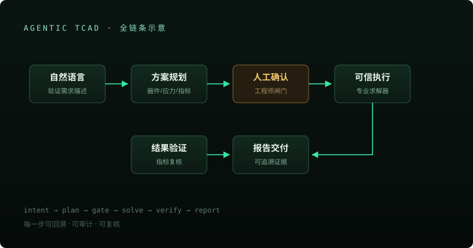

Agentic TCAD
工艺 → 器件 → 老化 → 寿命的一条链
工程师用自然语言描述验证需求，系统规划受控仿真、调用专业求解器、产出有据可查的结果——每一步都可追溯、可审计、可复核。


方向与价值
AI 设计芯片的速度正在以周计，但「这颗芯片能不能用十年」仍然要回到器件物理。这个工作台要做的是把 TCAD 仿真从专家手艺变成可调用的基础设施——AI 负责调度与编排，物理计算交给专业求解器，结论永远带证据链。
设计原则：仿真结果不冒充实测校准；AI 只理解意图与组织流程，数值结论全部来自确定性计算。